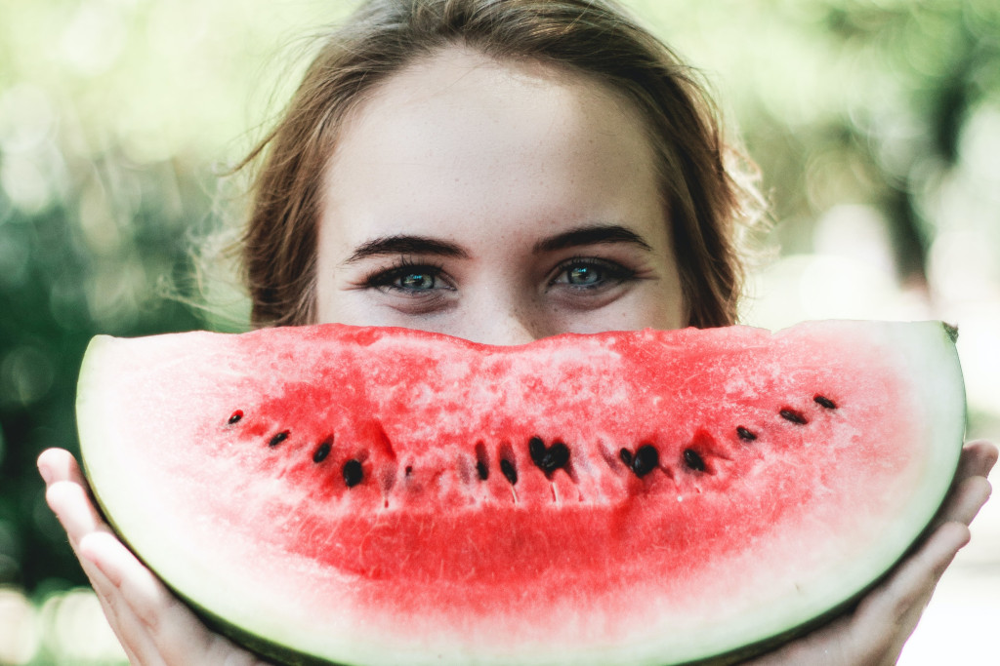

November 2021
Als 2G voor gezondheid en geluk zou staan, dan zou een discussie over 2G begrijpelijk zijn. Iedereen in Nederland wenst gezondheid en geluk, daar kan niemand tegen zijn, dat wensen we voor onszelf en ook voor elkaar. We realiseren ons dat gezondheid en geluk ook voor iedereen anders is. Waar de één gelukkig mee is, is voor de ander een hel, en andersom. Dat is het mooie van het leven, het geluk is overal. In de maatschappij waarin wij leven, waarin gelijke behandeling het hoogste goed is, kunnen we dat van elkaar tolereren en accepteren. Juist omdat dit voor iedereen geldt.
Helaas zijn we afgedwaald naar een andere 2G discussie, de discussie over gevaccineerd en genezen zijn of dat niet zijn. Vaccinatie tegen corona zou een goed middel kunnen zijn om de gezondheid en het geluk van veel Nederlanders te verbeteren, maar helaas is het middel tot doel verheven en werkt het averechts. De hypothese lijkt te zijn geworden: als iedereen gevaccineerd is, dan worden we allemaal gezond en gelukkig. Het tegendeel lijkt echter gerealiseerd te worden, de discussie hierover maakt ons ongelukkig.
Wakker worden! Vaccinatie is geen doel, maar een middel. En voor sommige mensen draagt dat middel bij aan hun gezondheid en geluk, maar voor sommige ook niet. Laten we dat niet uit het oog verliezen. Voor iedereen is gezondheid en geluk op een andere manier te realiseren. Bij de een helpt vaccineren tegen corona daarbij, bij een ander niet. Net zoals sporten voor de ene groep wel bijdraagt aan hun gezondheid en geluk, maar voor de andere niet. Of zoals het werk wel of niet een bijdrage levert aan gezondheid of geluk. Of zoals het vegetarisch eten wel of niet bijdraagt aan gezondheid of geluk. Of zoals sociaal contact wel of niet bijdraagt aan gezondheid of geluk. Het zijn allemaal middelen om een universeel doel te bereiken.
De discussie gaat al veel te lang over het middel vaccinatie tegen ziek worden van corona en mag nu gewoon gestopt worden. Corona is niet de enige manier om ziek te worden en vaccinatie is niet de enige oplossing. Laten we het hebben over het achterliggende 2G doel, gezondheid en geluk voor iedereen.
Voordat we dat doen, nog één dingetje, ik hoor je denken: maar het is toch belangrijk dat je iets doet voor een ander, dat je je bijvoorbeeld vaccineert tegen corona voor een ander, zodat je anderen niet besmet. Nou nee, dat is niet zo. Allereerst, je kunt anderen niet gezond en gelukkig maken. Iedereen kan alleen maar zichzelf gezond en gelukkig maken. En dat is niet asociaal of egoïstisch, iedereen weet voor zichzelf wat hem gezond en gelukkig maakt, dat moeten we respecteren. Iemand de vrijheid daarin geven, dat is echt sociaal. En als iemand gezond en gelukkig is, dan zal dat overgedragen worden naar anderen en dan zullen anderen daarvan profiteren. Als tweede kun je niet zeggen dat mensen elkaar besmetten, want het virus besmet. Het virus maakt geen onderscheidt tussen gevaccineerden en ongevaccineerden. Het is de gezondheid van het individu wat bepaalt hoe ziek het individu wordt van een virusbesmetting. Met veel mensen in een ruimte zullen sommige wel ziek worden en anderen niet. Zo hebben sommige voor de juiste weerstand een vaccin nodig, anderen niet. Sommige komen in het ziekenhuis en anderen niet. Dat is hoe het met alle ziekten gaat. En als er teveel mensen in het ziekenhuis komen, dan hebben we met z'n allen een probleem wat groter is dan de ziekte door corona en het middel vaccinatie. Dat probleem moet dan ook op een andere manier opgelost worden.
We wensen gezondheid en geluk voor onszelf en voor anderen. Daar kunnen we allemaal achterstaan. Hoe we dat kunnen bereiken, daar denkt iedereen anders over, daarom hebben we een grondwet nodig die het voor iedereen mogelijk maakt zijn eigen pad te bewandelen, zonder bemoeienis van een ander. En er zijn normen en waarden nodig die ervoor zorgen dat we elkaar niet in de weg zitten bij het bewandelen van ons pad en het bereiken van onze eigen geluk en gezondheid.
De kern van de normen en waarden in de yoga is dat we gezondheid en geluk niet buiten onszelf kunnen vinden, we kunnen het alleen maar zelf realiseren. We kunnen dus niet van anderen verwachten dat zij dat ons op een presenteer blaadje geven. Wel moeten we er voor zorgen dat we bij het nastreven van ons eigen geluk onszelf en anderen geen schade berokkenen. Hoe doe je dat, je eigen geluk nastreven in een complexe samenleving? In de yoga zijn daar richtlijnen voor, yama's en niyama's genoemd. Deze zijn een voorwaarde voor het goed kunnen beoefenen van yogahoudingen en meditatie. De persoonlijke richtlijnen zijn.